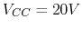
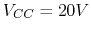

The circuit shown below contains an AC voltage source of 210V with frequency 50 Hz, an amp meter A, and an unknown component . In order to find the complex impedance of , a capacitor is added as shown. The amp meter reading is 3A before the switch is closed and it is 4A after the switch is closed. Find the complex value of .
(Hint: (a) Assume an ideal amp meter with zero impedance, (b) it only reads the rms value of the current without reading the phase, (c) use phasor method, (d) all values are steady state values, no need to consider transient values.)
The circuit below shows a simple means for obtaining improved bias
stability of the DC operating point of the transistor. As always,
assume  when answering the following questions.
when answering the following questions.


The circuit shown below is a silicon transistor amplifier which takes one
input and generates two outputs  and
and  . Assume
,
. Assume
,  , ,
,
, ,
,  .
.